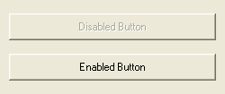

DisableGadget()
语法
DisableGadget(#Gadget, State)概要
Disable or enable the gadget.
参数
#Gadget The gadget to enable or disable. State The new state of the gadget. If State = 1, the gadget will be disabled, if State = 0 it will be enabled.
返回值
无.
示例
If OpenWindow(0, 0, 0, 250, 105, "Disable/enable buttons...", #PB_Window_SystemMenu | #PB_Window_ScreenCentered) ButtonGadget(0, 10, 15, 230, 30, "Disabled Button") : DisableGadget(0, 1) ButtonGadget(1, 10, 60, 230, 30, "Enabled Button") : DisableGadget(1, 0) Repeat : Until WaitWindowEvent() = #PB_Event_CloseWindow EndIf

参阅
HideGadget()
已支持操作系统
所有